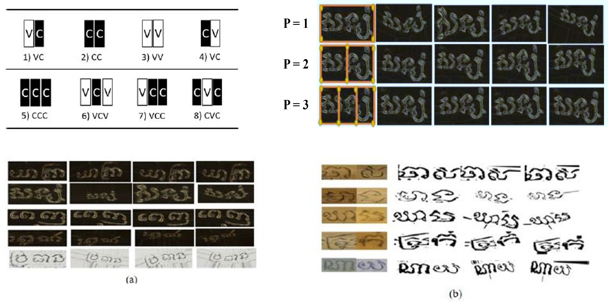
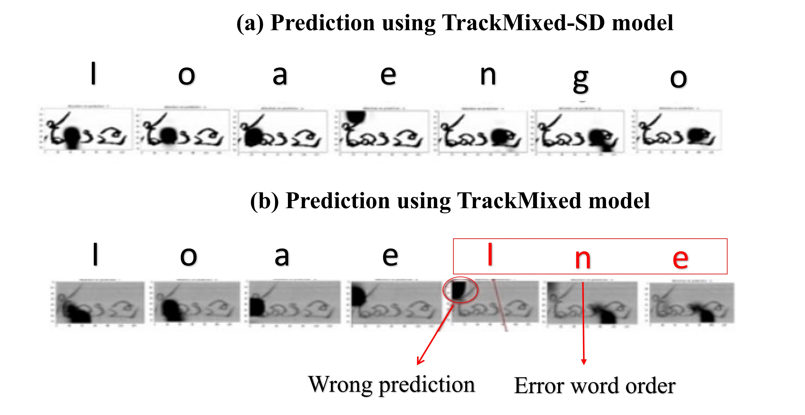

Project Description
This project focuses on the study and analysis of ancient low-resource languages—specifically Balinese, Khmer, and Sundanese using advanced text recognition methods and benchmarking strategies. We address the inherent challenges of these complex, multi-script languages by proposing effective solutions tailored to their unique characteristics. Although data augmentation is widely used to mitigate data scarcity, issues such as grammatical inconsistencies and limited annotated samples often impede model accuracy. Two core challenges are the intricacies of grammar and the high degree of word similarity. To overcome these obstacles, we introduce the Syllable Analysis Data Augmentation (SADA) technique, designed to improve the accuracy of text recognition systems for Southeast Asian historical manuscripts. Our approach involves two key steps. First, we implement KH-SADA, which leverages DenseNet with GRU-based attention mechanisms for syllable-level analysis. Second, we present a multimodal framework, PALM-SADA, for multi-script recognition. This framework integrates all target scripts by constructing enhanced grammar structures and utilizing multiple transformer-based models to automatically correct grammatical errors. We evaluate our approach on diverse datasets, including public benchmarks from the ICFHR 2018 competition and newly augmented collections, with the aim of demonstrating and advancing the accuracy of historical text recognition systems.
Overall Objective Framework & Challenges
Challenges: Ancient languages like Khmer, Balinese, and Sundanese feature complex writing systems with unique glyphs, subscripts, and diacritical marks. Their writing structures are characterized by intricate syllable clustering and multi-level word structures (upper, main, and bottom levels). The grouping of glyphs to form words, governed by complex grammatical rules, adds to the difficulty. Understanding the order and positioning of each glyph type is crucial for accurate recognition. This project's framework is designed to deconstruct and model these complexities.
Visual Examples of Script Complexity
Example of Word Level Structure

Details: a) Upper level for vowel and individual subscript; b) Main level for central consonant; c) Bottom level for subscript and particular vowel.
Glyph and Writing Order

Details: a) Two input images represent vowel “ee” and consonant “Kha”; b) For glyphs order: some vowels can be in front of consonants; c) For writing order: consonants always stay in front of vowels.
Example of Data Augmentation
Details: New samples are generated using syllable-level data augmentation techniques to enrich the dataset.
Error Analysis
Details: Visualization of error patterns using SADA models.
Research & Publications
Syllable Analysis Data Augmentation for Khmer Ancient Palm leaf Recognition
N. Thuon, J. Du, J. Zhang. APSIPA ASC 2022.
Summary: This paper tackles two critical challenges in recognizing text from ancient Khmer manuscripts: grammar complexity and high visual similarity between words. We introduce the Syllable Analysis Data Augmentation (SADA) technique, a novel pre-processing strategy to significantly expand limited datasets. SADA works by first creating a structured collection of syllables and glyph patterns based on linguistic rules. It then generates new, diverse training images through flexible geometric transformations, creating realistic variations of words and text lines. This approach effectively enriches the training data, allowing recognition models like DenseNet-GRU to achieve higher accuracy, especially for low-resource scripts.

KhmerFormer: Multi-Scale CNNs-Transformer with External Attention for Ancient Khmer Isolated Glyph Classification
N. Thuon, J. Du, J. Zhang. APSIPA ASC 2024.
Summary: The classification of isolated glyphs is a fundamental step in manuscript analysis, but it is hindered by intra-class variations and inter-class similarities. This paper introduces KhmerFormer, a novel hybrid architecture that combines Convolutional Neural Networks (CNNs) and a Transformer encoder. The model uses multi-scale CNNs to extract robust local features and an external attention mechanism within the Transformer to capture long-range dependencies and global features effectively. This dual approach allows KhmerFormer to learn more discriminative representations, leading to state-of-the-art performance in classifying ancient Khmer glyphs and demonstrating its potential for other complex scripts.
Multi-low resource languages in palm leaf manuscript recognition: Syllable-based augmentation and error analysis
N. Thuon, J. Du, J. Zhang. Pattern Recognition Letters, 2025.
Summary: This work extends our syllable-based augmentation strategy to a multi-language context, simultaneously addressing Khmer, Balinese, and Sundanese scripts. It presents a unified framework for recognition across these low-resource languages, which often share historical roots but have distinct visual and grammatical rules. A key contribution of this paper is a detailed error analysis that identifies common points of failure in multi-script OCR systems, such as confusion between visually similar glyphs from different languages. The findings provide a roadmap for developing more robust, generalized recognition models for the diverse manuscript traditions of Southeast Asia.
How to Cite
Syllable Analysis Data Augmentation for Khmer Ancient Palm leaf Recognition
@inproceedings{thuon2022syllablekhmer,
title={Syllable analysis data augmentation for khmer ancient palm leaf recognition},
author={Thuon, Nimol and Du, Jun and Zhang, Jianshu},
booktitle={2022 Asia-Pacific Signal and Information Processing Association Annual Summit and Conference (APSIPA ASC)},
pages={1855--1862},
year={2022},
organization={IEEE}
}KhmerFormer: Multi-Scale CNNs-Transformer with External Attention for Ancient Khmer Isolated Glyph Classification
@INPROCEEDINGS{thuon2024khmerformer,
author={Thuon, Nimol and Du, Jun},
booktitle={2024 Asia Pacific Signal and Information Processing Association Annual Summit and Conference (APSIPA ASC)},
title={KhmerFormer: Multi-Scale CNNs-Transformer with External Attention for Ancient Khmer Palm Leaf Isolated Glyph Classification},
year={2024},
pages={1-6},}Multi-low resource languages in palm leaf manuscript recognition: Syllable-based augmentation and error analysis
@article{THUON20258,
title = {Multi-low resource languages in palm leaf manuscript recognition: Syllable-based augmentation and error analysis},
journal = {Pattern Recognition Letters},
volume = {195},
pages = {8-15},
year = {2025},
issn = {0167-8655},
author = {Nimol Thuon and Jun Du and Panhapin Theang and Ranysakol Thuon},
}